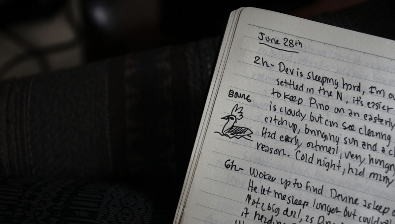
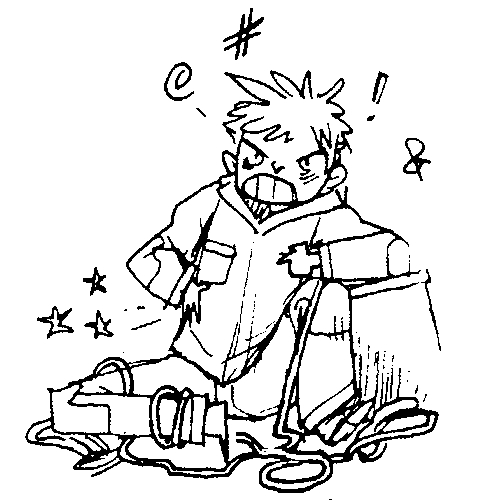
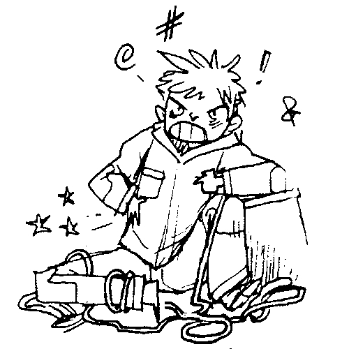

About
About Projects
Projects Books
Books Games
Games Stories
Stories Store
Store Notes
Notes How-to
How-toBusy Doing Nothing is a 218-page book, chronicling daily happenings on the 51-day passage of HundredRabbits from Japan to Canada.
The original logbook was transcribed, and released online in August 2020. On February 17th 2021, Hundredrabbits released a formatted revised edition for e-readers with extra content. On December 3rd 2021, we released a paperback version.
It was my dream to make this long, non-stop sail, following in the footsteps of my heroine Lin Pardey. She wrote a book chronicling their trip from Japan to Victoria, mixed with stories of past learnings from her many years of experience as a cook on sailboats.

I do not have Lin's experience, but I liked the idea of journaling every day. I thought a trip that long was worth documenting. Sailing isn't just about pleasure, it's also about boredom, very high highs, very low lows, and on finding ways to keep sane while in a small, small space surrounded by a wild, wild, and wet universe.
I kept a handwritten log, and drew little cartoons in the margins when I felt down, or scared. Many drawings are from the original log, but I drew many new ones to decorate the pages (I didn't have enough for all 51 days). To keep the same general style and feel, I drew them in the same notebook with the same pens.
The original, unedited online logbook is still up, for those who can't afford to buy the book. If you can pay, I'd appreciate it if you could buy a copy. It helps fuel the writings of future stories and illustrations. I also wrote a small tutorial on how to use Pandoc to publish e-books. If you would like my assistance in publishing a book, let me know and I'll help as best I can.
Buy the paperback version of the book.
The book has a matte cover, and is sold for:
$14.76 USD|€13.60 EUR|$22.33 AUD|£11.33 GBP|$22.15 CAD

...or buy the e-book version!
BUY BUSY DOING NOTHING E-BOOK$5.00 USD
Artwork
 
